Il restauro della Porta della Libertà è stato reso possibile grazie al generoso contributo di istituzioni, aziende e privati cittadini che hanno creduto nel valore di questo straordinario patrimonio.
Sponsor Istituzionali
Contributo Principale
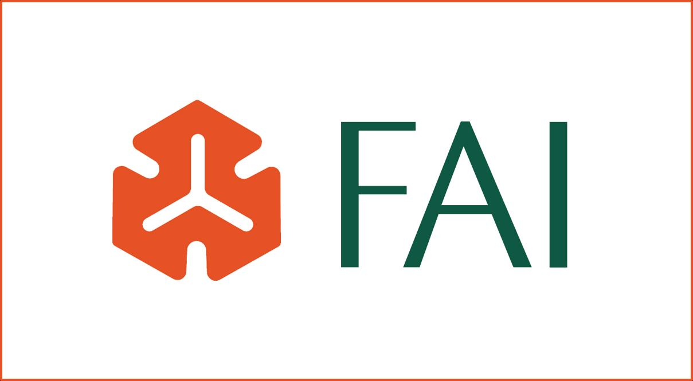
FAI
Fondo per l'Ambiente Italiano
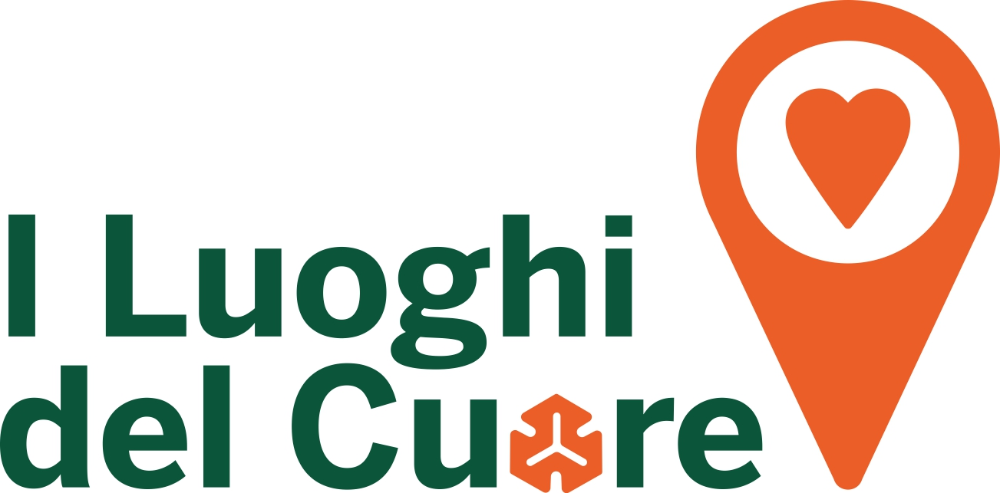
I Luoghi del Cuore
XII Edizione · 2024
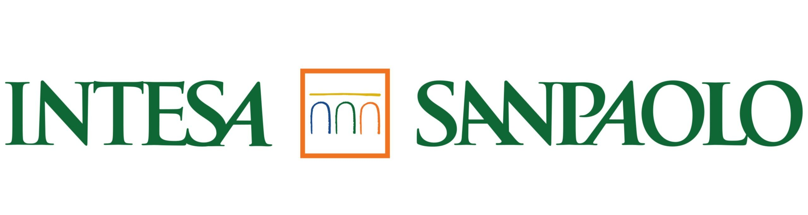
Intesa Sanpaolo
Contributo principale
Con il supporto di
Cofinanziamento
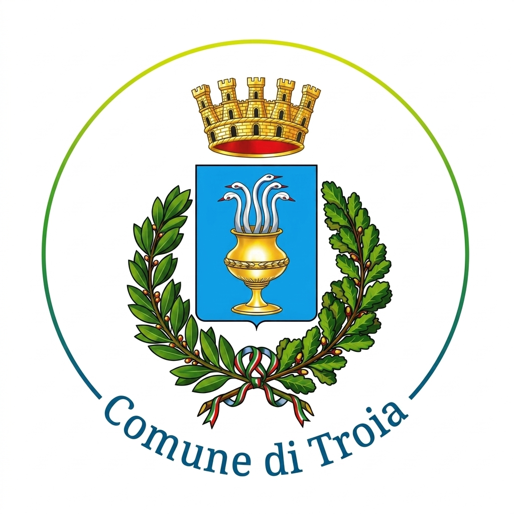
Comune di Troia
Raccolta fondi e patrocinio
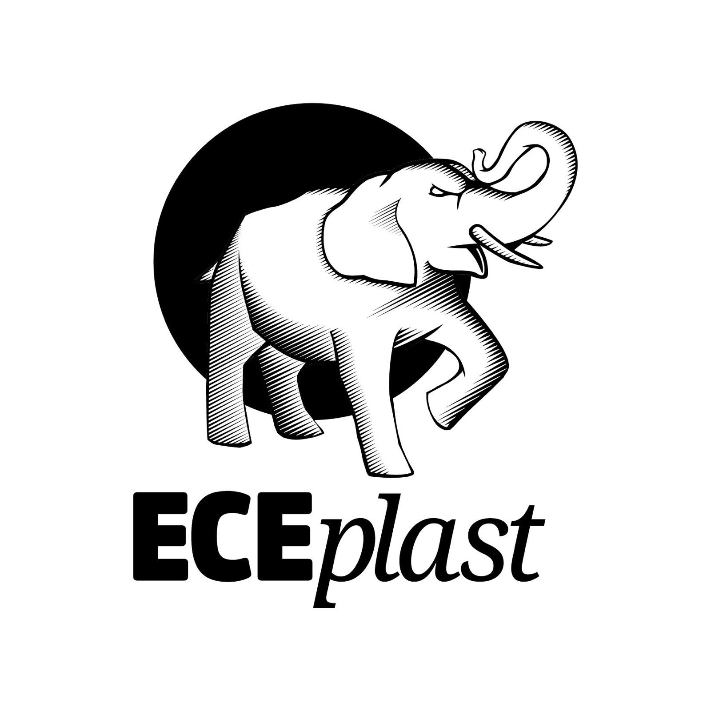
ECEplast
Sostenitore
Sponsor Tecnici
Supporto Tecnico al Restauro
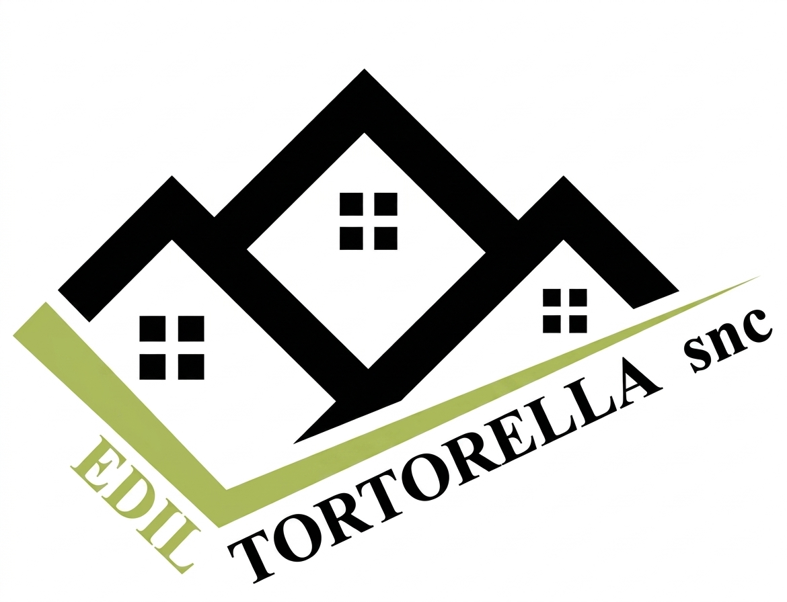
Edil Tortorella snc
Impresa Edile
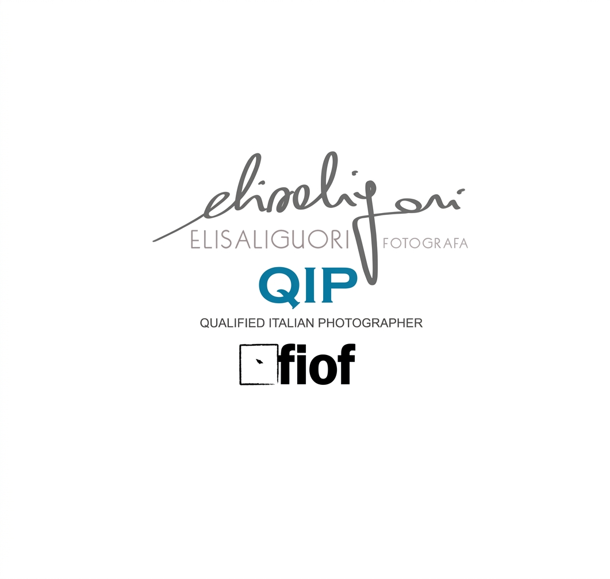
Elisa Liguori
Fotografa
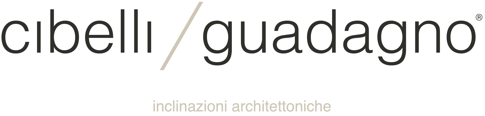
Cibelli / Guadagno
Inclinazioni Architettoniche
ing. Angelo Moffa
Consulenza Tecnica
Sponsor
Con il loro contributo
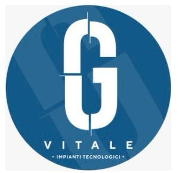
G Vitale
Impianti Tecnologici
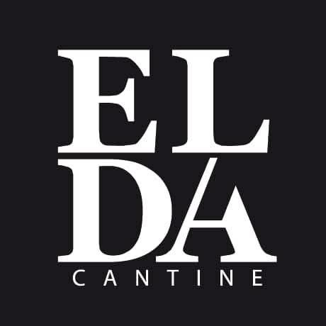
ELDA Cantine
Sostenitore
Privati
Donatori Privati
Famiglia Beccia-Catalano
Nipoti Mons. M. De Santis
Enti Patrocinatori
Con il Patrocinio di
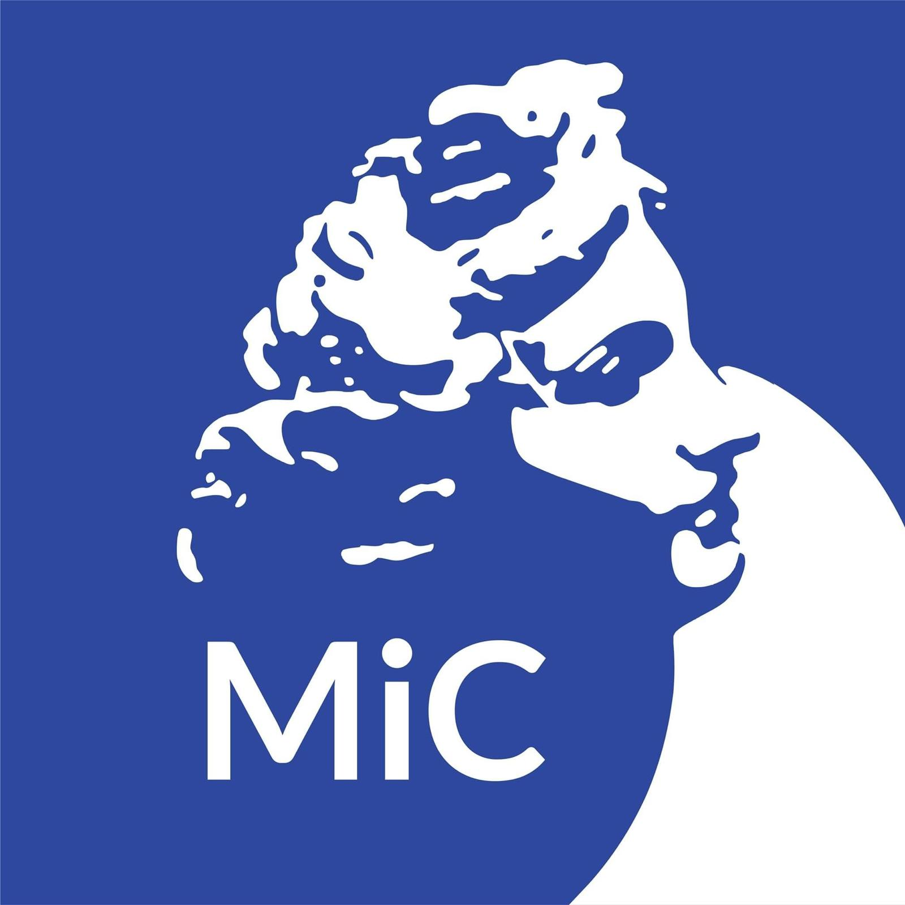
MiC
Ministero della Cultura
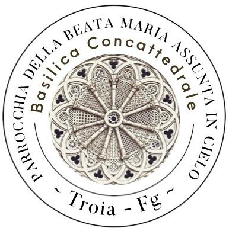
Basilica Concattedrale
Parrocchia di Troia
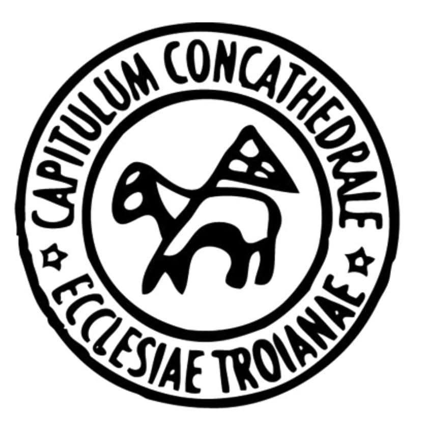
Capitulum
Ecclesiae Troianae